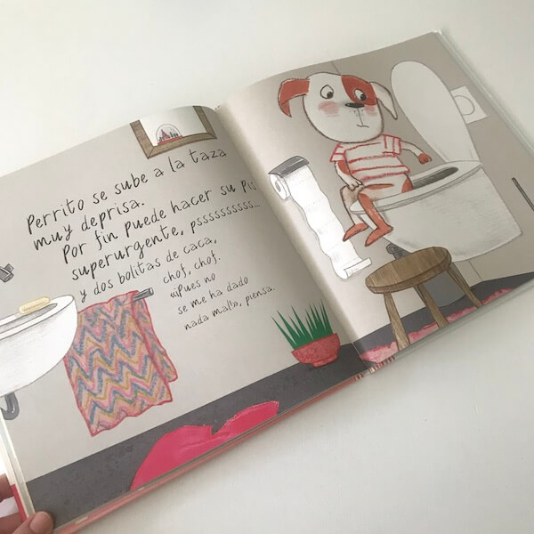
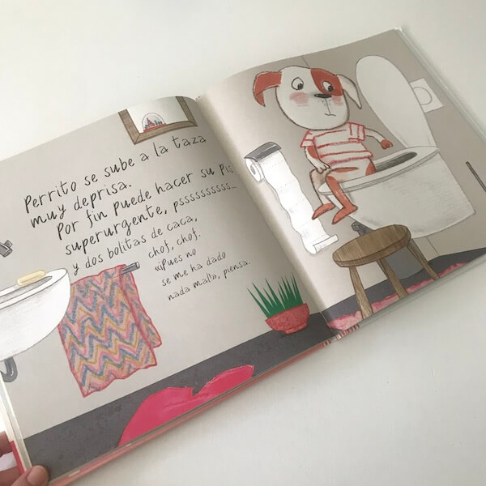
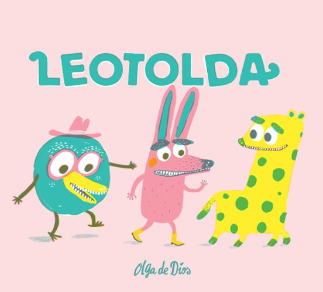

Perrito tiene prisa es de algún modo una continuación de "puedo mirar tú pañal? de Guido Van Genechten: Ambos libros están centrados en la retirada del pañal, un momento importante en la vida de un bebé. En el libro "puedo mirar tú pañal" se centra en el uso del orinal y que los peques vayan comprendiendo que al tener el pañal limpio pueden ir dejandolo.En este cuento de el "Perrito tiene mucha prisa", se centra más en el uso del inodoro, los protagonistas tienen el orinal totalmente interiorizado y se trata de dar un paso más: usar el Wc. Este cuento es interesante para aquellos niños que estén transitando este momento, que puedan sentirse identificados y ayudarles en lograr este nuevo hábito.
Argumento:

¡Perrito tiene una urgencia!
Va corriendo con su rollo de papel higiénico en la mano pero encuentra su orinal ocupado por su hermana pequeña.¿por qué?
Pues porque Ratón esta usando el orinal de su hermana, porque Rana esta haciendo pis en el orinal de Ratón...
 ¿por qué Rana esta haciendo pis en el orinal de Ratón en lugar de el suyo? Porque Cebra está intentando encestar sus bolitas en el orinal de Rana.
Perrito ya no sabe que hacer porque todos los orinales están ocupados, asi que perrito decide ir corriendo al váter de los mayores, que por suerte está libre.

Perrito se sube a la taza muy deprisa.Por fin puede hacer pis urgentemente.
veremos como se limpia, se lava las manos, tira de la cadena y se siente muy orgulloso de si mismo.
¡Hermanita, puedes quedarte con mi orinal si quieres! ¡ Yo ya no lo necesito!
Las ilustraciones son preciosas y muy expresivas, hace que el libro se pueda contar sin leer el texto.
La estructura repetitiva de la historia hace que los pequeños puedan adelantar lo que va a pasar y les suele gustar mucho.
En definitiva, es un libro que recomiendo mucho.
¿por qué Rana esta haciendo pis en el orinal de Ratón en lugar de el suyo? Porque Cebra está intentando encestar sus bolitas en el orinal de Rana.
Perrito ya no sabe que hacer porque todos los orinales están ocupados, asi que perrito decide ir corriendo al váter de los mayores, que por suerte está libre.

Perrito se sube a la taza muy deprisa.Por fin puede hacer pis urgentemente.
veremos como se limpia, se lava las manos, tira de la cadena y se siente muy orgulloso de si mismo.
¡Hermanita, puedes quedarte con mi orinal si quieres! ¡ Yo ya no lo necesito!
Las ilustraciones son preciosas y muy expresivas, hace que el libro se pueda contar sin leer el texto.
La estructura repetitiva de la historia hace que los pequeños puedan adelantar lo que va a pasar y les suele gustar mucho.
En definitiva, es un libro que recomiendo mucho.

¿Quien es ese bicho? de Carmen Queralt es un cuento de cartón duro y formato pequeño para los más pequeños de la casa.
Nos presenta a un montón de bichos que aunque de lejos parezcan todos iguales, de cerca veremos que los hay muy pequeños, de lunares,
con mil rayas.

 El pequeño lector se convertira en protagonista al llegar al final que es toda una sorpresa!
Tiene un texto sencillo y corto, escrito en mayúsculas que hace que sea estupenda lectura para los primeros lectores.
Es una buena manera de intriducir adjetivos descriptivos y comprendan la diversidad de los seres vivos, una manera de transmitir el valor de la inclusividad.
El formato pequeño, hace que sea manejable para las pequeñas manos y el cartón duro hace que sea resistente.
Las ilustraciones en color tierra y además utilizando la técnica de collage lo hace muy atractivo.
El pequeño lector se convertira en protagonista al llegar al final que es toda una sorpresa!
Tiene un texto sencillo y corto, escrito en mayúsculas que hace que sea estupenda lectura para los primeros lectores.
Es una buena manera de intriducir adjetivos descriptivos y comprendan la diversidad de los seres vivos, una manera de transmitir el valor de la inclusividad.
El formato pequeño, hace que sea manejable para las pequeñas manos y el cartón duro hace que sea resistente.
Las ilustraciones en color tierra y además utilizando la técnica de collage lo hace muy atractivo.

Crece con Lola es la divertida colección rimada que acompañará a los más pequeños en la aventura de hacerse mayor.
Lola descubre que los dientes son importantes para poder hacer cosas impresionantes.Ahora es el momento de dejar el chupete fuera y Lola lo conseguira poco a poco y ¡a su manera! ¡crece con Lola mola!
 Es un album con ilustraciones preciosas que gustará muchisimo a niños y adultos. Con muy poco texto y unas imagenes preciosas.Perfecto para todos aquellos peques que estan en la etapa del destete.
Es un album con ilustraciones preciosas que gustará muchisimo a niños y adultos. Con muy poco texto y unas imagenes preciosas.Perfecto para todos aquellos peques que estan en la etapa del destete.


Cuando sea mayor seré... es un precioso libro de Combel,en formato pequeño y páginas duras de cartón que permite a los niños más pequeños descrubrir las profesiones.
Nada más abrir el libro veremos una pequeña explicación rimada acerca de los diferentes oficios:
"" Cada cual en su trabajo
da lo mejor de si mismo.
Todos tienen su importancia,
todos hacen un servicio,
grandes hombre y mujeres,
que disfrutan con su oficio.""

Al pequeño lector se le invita a pensar, a tratar de averiguar de que profesión se trata en base a ese pequeño texto rimado que describe las caracteristicas del oficio y también por las imagenes
que lo acompañan antes de levantar la solapa.
"¿piensas que solo manejo
un teclado y un ratón?
en mi oficio necesito
bastante imaginación!"

Cuando sea mayor seré...Efectivamente, ¡programadora!
 Así iremos viendo hasta 10 profesiones diferentes.
Un libro-juego que permite a los niños adivinar los oficios y aprender sobre ellos.
Así iremos viendo hasta 10 profesiones diferentes.
Un libro-juego que permite a los niños adivinar los oficios y aprender sobre ellos.
una lectura en rima, muy musical, a traves de la cual los pequeos aprenden sobre el mundo que les rodea y adquieren
vocabulario relacionado con los trabajos.Es un libro con mucho detalle, por lo que seguro que os va a dar mucho juego, por ejemplo
señalando los diferentes instrumentos de cada profesión o buscando objetos que aparecen en las ilustraciones.
Es ideal desde que ya señalan con el dedo hasta algo mas mayores, 2-4 años, edad en la que pueden comprender que es una profesión y cuáles son algunas de las más conocidas entre los niños.

¿Que tienes en tu pañal? de Sandra Grimm es un divertido álbum ilustrado con solapas en el que los niños podrán observas las cacas que hacen varios animales.
EL conejo Quique y la oveja Seria recolectan flores en el prado. El rechoncho perro se esta echando la siesta junto a la valla cuando
de pronto empiezan a oler muy muy mal. ¡Quítate el pañal! le piden al perro. Efectivamente en su pañal hay un gran pastel.

Así, los niños irán viendo cómo son las caquitas de oveja, de vaca, de gorrión o de caballo.
Hasta que llega el turno del conejo, que ya no lleva pañal.
Quique es capaz de sentarse en el inodoro y hacer un montón de caquitas de conejo.¡Mucho mejor que en el pañal!

¿Que tienes en tu pañal? nos recuerda irremediablemente a ¿Puedo mirar tu pañal?
de Guido Van Genechten. Una historia que sigue una estructura muy similar, tambien con solapas, pero en este caso en un formato más pequeño, con páginas de cartón duro y mucho más texto, pensado para ser
leido por los adultos.
Perfecto para leer a los más pequeños, no sólo cuando estemos pensando en la retirada del pañal
ya que pocos temas les hacen más gracia que las cacas.

Nos Tratamos Bien, de Lucía Serrano ahora en formato cartón, ideal para los más pequeños.
¡Eres una persona única en el mundo. Las niñas y los niños de tu clase tambien lo son. ¡Todos somos diferentes!

 ¿Sabes que tenemos en común? Que a todas las personas nos gusta que nos traten bien. Y para ello hay ciertas cosas que debemos saber.
¿Sabes que tenemos en común? Que a todas las personas nos gusta que nos traten bien. Y para ello hay ciertas cosas que debemos saber.
Con este libro aprenderás que tratarnos bien es la nosma más importante del planeta Tierra.
Con un formato más resistente y un contenido adaptado, este nuevo libro es perfecto para nuestros lectores más jóvenes.

El libro interactivo para dormir a niños más regalado en el mundo.
Este precioso álbum de cartón invita a los niños a participar en el encantador ritual
de irse a la cama de Conejito, con una actividad divertida en cada página.
se ha hecho tarde y Conejito tiene que irse a dormir.
¿Le puedes ayudar?
Después de limpiar los dientes a Conejito, comienza un nuevo y maravilloso ritual:Hazle cosquillas en las orejas, ahueca la almohada,
acaricia su espalda, tápale con la mantita y dale un beso de buenas noches. Y no te olvides de apagar la luz:¡Aquí tienes el interruptor!
Pensado para leerse en voz alta, este es un libro divertido y sorprendente que enseña a los niños más pequeños y preescolares sobre las rutinas a la hora de dormir. Sólo en Alemania ha vendido más de medio millón de ejemplaress y se ha traducido a
chino, holandes, ingles, finlandes, frances, japones, coreano, polaco y sueco. Ha recibido además importantes reconocimientos como el
White Raven.
Un maravilloso libro interactivo para niños y conejitos antes de dormir. EL ilustrador es Axel Scheffler ( El grúfalo).

Cuatro amigos musicales se dirigen a una celebración muy especial! Un libro interactivo que incluye la melodia de la canción del cumpleaños feliz, un final espectacular y una vela de cumpleaños sorpresa!

Un libro con sonidos para aprender las rutinas que tiene como protagonista a Iku.
Un libro con 5 sonidos divertidisimo par aprender a usar el orinal.
Iku ya no lleva pañal, sino ropa interior. A veces tiene accidentes, pero otras consigue llegar a tiempo a su precioso orinal rojo y todo el mundo se alegra.
Un libro sonoro ideal para compartir con cualquiera que esté dejando el pañal o vaya a hacerlo próximamente, con un enfoque moderno que sirve
tanto para niñas como para niños ya que está libre de estereotipos de género.
Los botones están adaptados a pequeñas manos e invitan a interactuar con el libro. Los peques apretarán los botones una y otra vez, fascinados por los sonidos.
Les encantará escuchar el sonido del pipí y pulsar el botón al final.
Las ilustraciones de Nicola son a parte de adorables muy detalladas, lo que permite hacer muchos comentarios sobre lo que está sucediendo en cada página.
Recomendado a partir de 1 año para familiarizar a los peques en el uso del orinal. Los libros sobre ir al baño suelen ser muy útiles en el momento de dejar el pañal y este tiene
un mensaje positivo para animar a todos los niños y niñas a conseguirlo.

Un álbum que desarrolla la imaginación de los más pequeños.
Sugerentes y originales ilustraciones que con sólo tres tintas recrean un universo de color.
Disfruta de una divertida historia de la mano de unos personajes muy especiales.

A Nora le encanta disfrazarse y hoy ha decidido convertirse en la doctora Nora. Con su botiquín mágico conseguira curar a todos sus pacientes:
El resfriado de Oso Polar, el golpetazo de Cocodrilo y la garganta irritada de Pelícano.

Hace mucho tiempo que los animales deseaban averiguar a que sábia la luna.¿Sería dulce o salada?
Tan solo querían probar un pedacito. Por las noches, miraban ansiosos hacia el cielo.
Se estiraban e intentaban cogerla, alargando el cuello, las piernas y los brazos.¿Quien no soño alguna vez con
darle un mordisco a la luna?
Este fue precisamente el deseo de los animales de este cuento. Tan solo querían probar un pedacito pero por más que se estiraban, no eran capaces de tocarla.
Entonces, la tortuga tuvo una genial idea:¿Si te subes a mi espalda, tal vez lleguemos a la luna? le dijo al elefante...

Allá donde se acaba el mundo vivía una pequeña cebra. Un día, al salir de casa, el viento bandido se llevó siete rayas de su vestido.
Una araña, una serpiente, el arco iris y una cigarra, entre otros,, ayudarán a Camila a olvidar su pena.La cebra Camila nos ofrece una particular visión del paso de la infancia a una cierta conciencia del tiempo, al descubrimientodel mundo y
los problemas que de ello puedan derivarse.
El texto, de estructura encadenada, utiliza los recursos propios de los cuentos tradicionales:
juegos de preguntas y respuestas, rimas, reiteraciones, apoyándose en un tono sugerente y poético.
La autora, Marisa Nuñez es profesora de educación infantil y gran conocedora del mundo de los niños.
Imparte cursos de Ami,ación a la lectura y dirige una de las colecciones de Kalandraka. Las ilustraciones de Oscar
Villan son sencillas y expresivas, adornadas de guiños dispuestos para que los más pequeños lectores busquen más alla de la aparente simplicidad.

Los ratones eran muy pobres, pero tenían puestas todas sus esperanzas en Matías. Crecería y quizás se hiciese médico. Entonces sí que podrían comer queso parmesano en el desayuno,
en la comida y en la cena.
Pero cuando le preguntaron a Matías que quería ser cuando fuese mayor, el respondío: No lo sé!
Quiero ver mundo. El arte, como escaparate de conocimiento y cultura del mundo entero,como expresión de creatividad y libertad; como camino para transformar la realidad.
La primera visita a un museo le cambia la vida a Matías y le sirve para enfocar sus aspiraciones:de vivir en un humilde desván a viajar y exponer sus propias obras en salas de prestigío internacional.
Leo Lionni nos acerca a algunos estilos, desde el clacisismo de los retratos históricos y los bodegones, hasta vanguardias pictorícas como el impresionismo o el subrrealismo. El sueñode Matias es un album para iniciar al público infantil en la educación estetica, cultura, interpretación de las formas y los colores.
A traves de na historia cercana y llena de fantasía y con unas ilustraciones descriptivas de una enorme riqueza cromática hechas con la técnica del collage, el autor comparte con los lectores sus dos grandes pasiones:
el arte y la música.